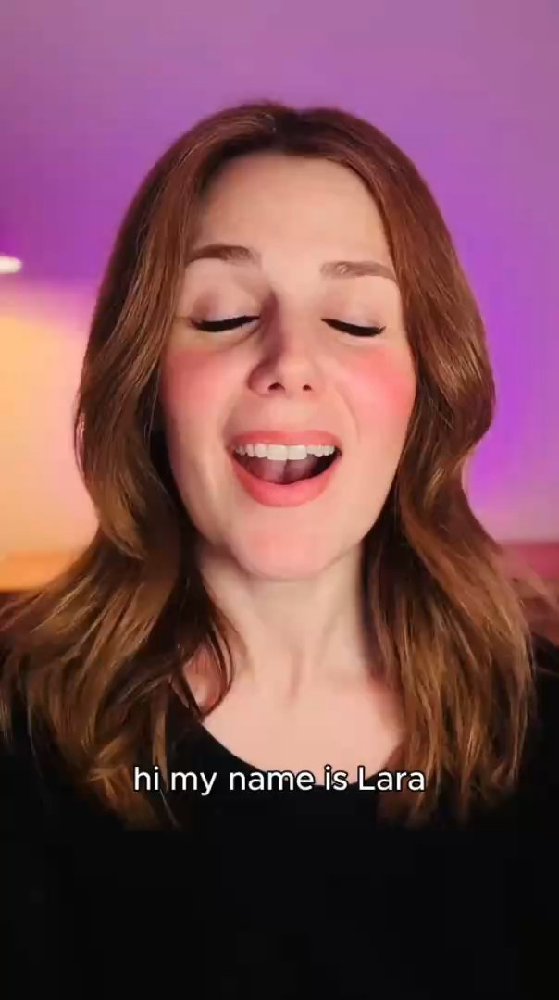

Duccio Armenise
Hard to pronounce, easy to work with.
Work
Find only the best training courses in Italy.
A unique CV for your career.
The best way to create extraordinary online courses. With gamification and app included.
Mentoring indie devs on 𝕏 like I was paid.
(While writing a book about it)
Wall of Love



Duccio is an incredibly talented individual with a real knack for helping others. He has proven extremely supportive of me and my projects throughout these past years.
He was by my side during the launch of my passion project and played a crucial role in coming up with a marketing strategy that really made a difference.
Despite having a very logical and rational approach to things, Duccio has no issue thinking outside the box when needed.
He's a great mentor who will go at great lengths to give his input and support.

Working with Duccio is a special experience for three reasons:
- His impeccable integrity.
- His passion and devotion to work.
- His calm, brilliant, and extremely rational modus operandi.
Three qualities that are rare on their own, and extraordinary when all found in the same person :)
I've been working with Duccio for over 5 years and we've collaborated on several projects, including Corsidia, on which we've worked together since the very beginning.
He's an excellent manager, always focused on results without losing sight of the overall vision and this allows him to coordinate his partners and collaborators work very efficiently. Thanks to his fairness and empathy, he is a good motivator, who instills confidence in the people he works with.
In summary, Duccio's leadership qualities and interpersonal skills make him an invaluable asset to any project and it's a pleasure for me to continue working with him.

When you embark on an entrepreneurial journey, especially on your own (as in my case), after many struggles I managed to identify 3 truly important things. The ones that make the difference between success and failure.
- Setting priorities.
- Role models to follow (both general and business-related).
- A shoulder to complain on (the importance of venting is always too underestimated).
I never thought I'd find all three in a single person: Duccio Armenise. A mentor par excellence.
Duccio's contribution to developing my decision-making skills and my ability to overcome challenges has been decisive in all my endeavours.
Please don't take too much of his time — I need him.

I am impressed by Duccio's ability to handle any situation calmly and he understands both sides of the coin to better judge. I went into many discussions where we kept our points, argued, and come to conclusion after knowing all pros and cons. Every conversation that I had with him was very fruitful.
He has a very good understanding of programming, business knowledge & how to make good Italian Pizza :). I will continue working with him and near in the future will walk/run on the road for the same destination.

Duccio's professionalism stands out for his innate passion for the web.
We collaborated on giving a new look to an event page, achieving excellent results in terms of visibility. A remarkable makeover made possible by his ability to build teams and stay up to date with the latest technology.
Besides being receptive and innovative, Duccio has a healthy tendency toward continuous learning and the democratization of knowledge — a reliable and rare partner.
Duccio was my boss and tutor during my internship in WorldBridge. He always helped and guided me with every activity and task.
Really notable his organizing skills and his wide knowledge about the Web, in particular: coding, digital marketing and strategic planning. Noteworthy his integrity and his teamwork and communication soft skills.
I had the opportunity to work with Duccio on development of Corsidia. Apart from being technically good, he gives emphasis to details. He is innovative, organized as well as helpful and is always open to ideas and suggestions. He has made me improve my programming and organizational skills. Gem of a person to work with!